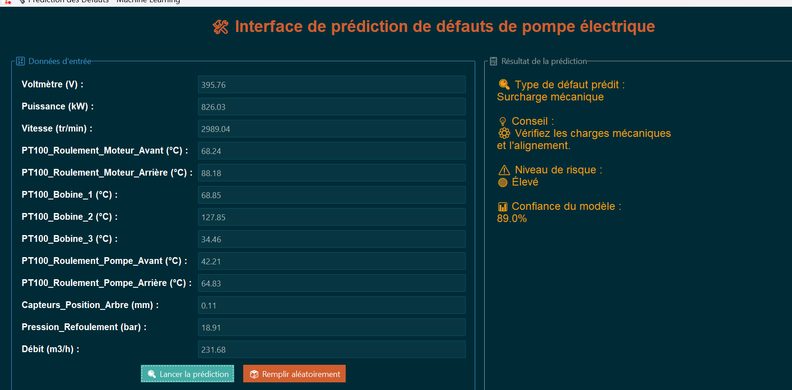

Threat intelligence - DFIR - Offensive Security - AI Security
Selected projects
Cybersecurity projects with technical evidence.
Built applications and engineering deliverables are listed here. Controlled security assessments and investigations have dedicated Labs and Writeups pages.
Smart contract security / Academic team project / 2026–2027
CrowdFund DAO — Secure Blockchain Crowdfunding
Three-person Ethereum crowdfunding dApp with ETH contributions, CFD governance voting, multisignature withdrawal controls, IPFS metadata and security testing.
My work: CFDToken (ERC-20/Permit/Votes), crowdfunding lifecycle, contribution and refund logic, and explicit fund-accounting invariants.
Validated refund and reentrancy protections with Hardhat tests and an attacker contract; the team also implemented role-gated pause controls, snapshot DAO governance and 2-of-3 trustee approval for payouts above 10 ETH.
Team of three, credited in the case study. Source is hosted in a teammate's private repository and is not falsely presented as my sole work.
AI Security / Red Team Engineering / Project in development
Red Team Agent for LLM Application Auditing
Building a controlled security-auditing toolchain for LLM-powered applications, with repeatable adversarial scenarios, independent evidence checks and explicit limitations.
Created UniAssist, a fictional local FastAPI/Ollama test target using synthetic data; recorded initial manual checks of instruction-following and context disclosure.
Developed a separate audit engine for scenario validation, HTTP execution, deterministic verdicts and structured reporting on development branches.
Preparing an installable Python CLI, optional attacker-LLM follow-ups and a local dashboard; real integration and final review are still pending.
Completed PFA project with CMRPI - Espace Maroc Cyberconfiance: an SME-oriented MVP for analyzing suspicious URLs without opening them.
Combined local URLHaus lookup, 21 URL features, scikit-learn Logistic Regression, risk levels, reasons and practical recommendations.
Implemented SQLite analysis history, CSV bulk analysis, configurable SMTP alerts, optional AbuseIPDB checks and SME reflex sheets.
Validated invalid inputs, URLHaus behavior, CSV processing, SQLite storage, disabled alerts and SMTP failure cases with automated tests.
Engineering case studyScope · Architecture · Validation · Limits
Challenge
Help an SME evaluate suspicious HTTP(S) URLs without automatically visiting potentially malicious websites.
My contribution
Developed the local URL processing flow, URLhaus lookup, lexical feature extraction, risk classification, Streamlit interface and optional operational alerts.
Validation
The public repository includes automated tests for malformed inputs, missing model assets, bulk CSV processing, history persistence and SMTP error paths.
Honest boundary
Local threat-intelligence data and trained model artifacts are not committed. An unavailable component must be reported as unavailable, not as a fabricated safety verdict.
Built a multilingual academic assistant for university FAQs, timetables and administrative information, using a RAG architecture and a full-stack application structure.
Designed a document-processing pipeline for PDF, JSON, TXT and Markdown sources with chunking and semantic retrieval.
Added security-oriented controls such as JWT, RBAC, rate limiting, audit logs and privacy workflows.
Engineering case studyRetrieval · Security controls · Boundaries
Challenge
Make university reference documents easier to query while preserving access boundaries and providing traceable academic answers.
My contribution
Designed the ingestion and retrieval architecture, application/API separation, and an engineering plan for authentication, access roles, rate limiting and auditability.
Technical decisions
Document chunking and vector search support retrieval; the FastAPI and Next.js architecture separates service logic from the interface.
Honest boundary
The full source repository is not public. The architecture describes the project; request a walkthrough to discuss implementation details and verification.
Built a Python prototype that classifies pump fault risk from sensor values and presents the result through a simple desktop interface.
Prepared data with Pandas and trained a Random Forest classifier with Scikit-learn.
Translated model output into a readable risk level for the user.
Useful supporting evidence for cybersecurity contexts involving operational data, risk classification and explainable output.
ONEE · Operational measurements → classification → desktop feedbackEngineering case studyMeasurements · Model · Interface · Limits
Challenge
Transform pump measurements (temperature, flow, pressure, speed, voltage) into an understandable fault-risk indication.
My contribution
Prepared tabular data with Pandas, trained a Random Forest classifier and integrated its output into a Python desktop prototype.
Application evidence

Screenshot available in the portfolio repository.
Honest boundary
Academic and internship prototype; the repository does not establish industrial deployment or production-grade predictive accuracy. Future work includes model evaluation and comparison.
Academic Python/Tkinter application for encoding and decoding messages with a 3×3 matrix of colored dots and a decoding key.
Converts messages into visual point matrices.
Imports and exports coded data as PNG images or JSON files.
DotCodeApp · Visual encoding and decoding (not a cryptographic security claim)Engineering case studyEncoding · Formats · Reversibility
Challenge
Represent short text as a human-visible pattern of colored points using an encoding key, then recover the text by decoding it.
My contribution
Built the Tkinter desktop application, visual 3×3 point representation and encoding/decoding workflows.
Outputs
Encoded content can be exported as an image or JSON; the repository documents importing encoded information for decoding.
Honest boundary
Visual coding is not equivalent to a reviewed cryptographic primitive and should not be presented as encryption suitable for protecting sensitive information.